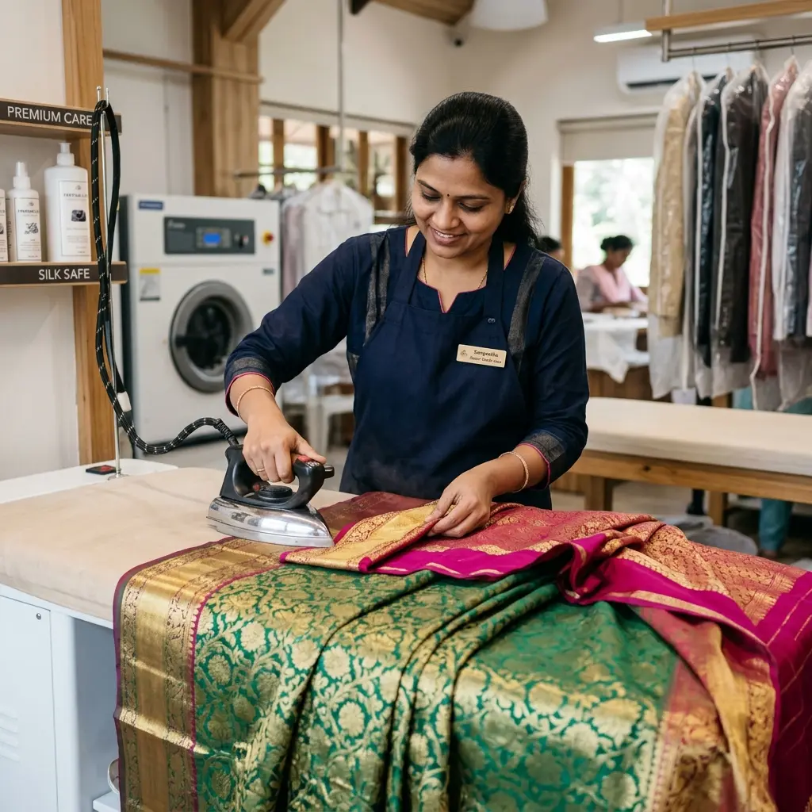

Silk, bridal, cotton saree cleaning prices – poori jankari

Saree sirf kapda nahi, yeh ek emotion hoti hai. Chahe woh aapki wedding silk saree ho ya maa ki purani cotton saree – inki safai ka sahi price aur process jaanna important hai. Is blog mein hum saree dry cleaning ke prices ke baare mein detail mein batayenge.
| Saree Type | Price | Time |
|---|---|---|
| Silk Saree | ₹120 | 48 hours |
| Bridal Saree | ₹200-₹300 | 48 hours |
| Cotton Saree | ₹120 | 48 hours |
| Designer Saree | ₹150-₹250 | 48 hours |
Note: Yeh approximate prices hain. Actual price fabric, embellishments aur stains ke hisaab se thoda badal sakta hai. Sahi price ke liye call karein 9950456693.
Bridal sarees mein heavy zari, stone work aur embroidery hoti hai. Inhe clean karte waqt extra care aur time lagta hai. Isliye inka price thoda higher hota hai. Lekin hum aapki bridal saree ko bilkul naye jaisa bana denge – guaranteed!
Free pickup & delivery. Expert saree care ₹120 se.